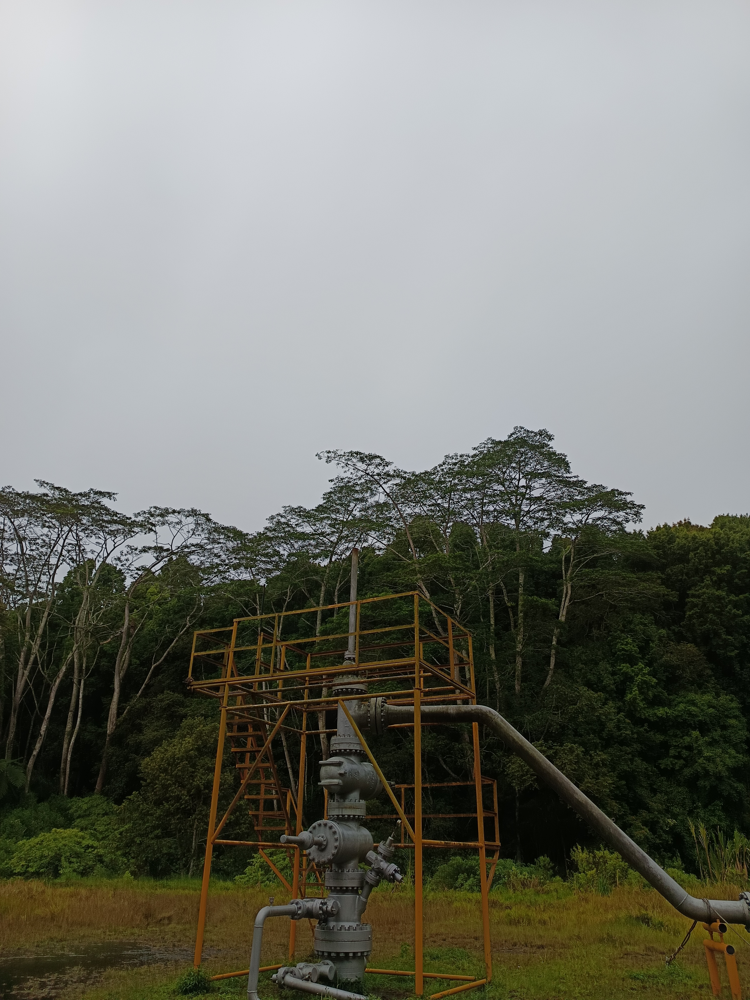
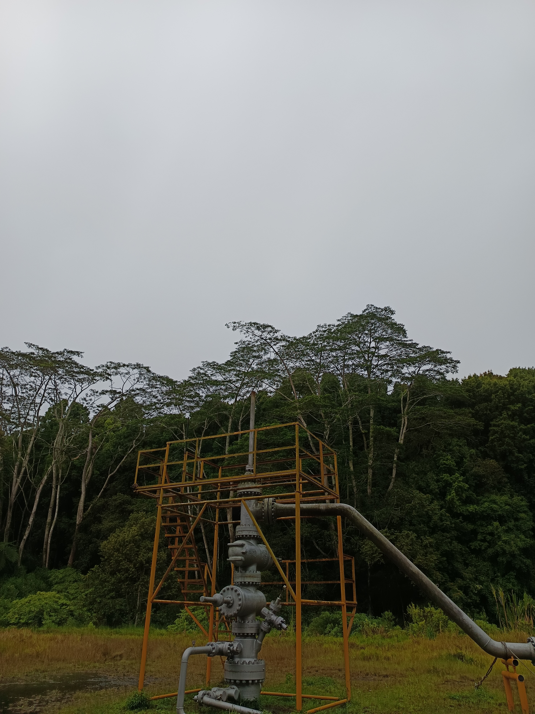
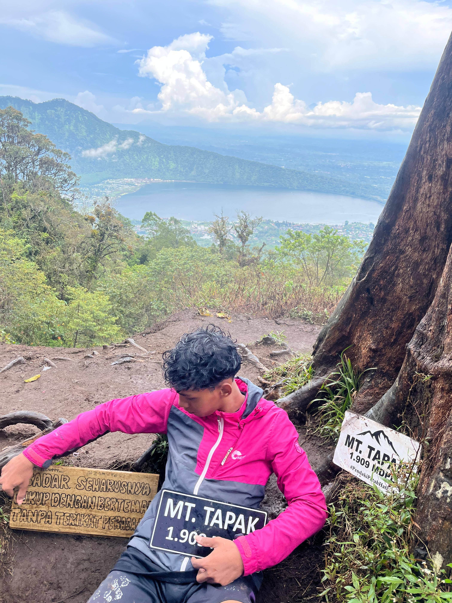
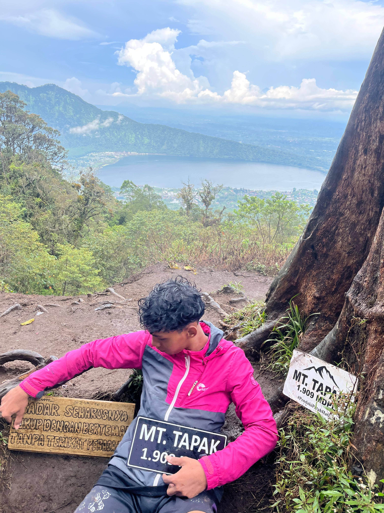

MOUNT TAPAK
 



 

Tentang Gunung Tapak
Gunung Tapak adalah sebuah gunung yang terletak di Bali, Indonesia, lebih tepatnya di Kabupaten Tabanan. Gunung ini memiliki ketinggian sekitar 1.473 meter di atas permukaan laut (mdpl) dan termasuk dalam kategori gunung berapi yang tidak aktif. Gunung Tapak terkenal dengan pemandangan alam yang indah, serta keanekaragaman flora dan fauna di sekitarnya.
Pendakian Gunung Tapak relatif ringan dan sering dijadikan pilihan oleh para pendaki pemula maupun yang ingin menikmati pemandangan alam tanpa harus menempuh perjalanan yang terlalu sulit. Dari puncaknya, pendaki dapat menikmati panorama alam Bali yang menakjubkan, termasuk pemandangan dari Gunung Agung dan Gunung Batur.